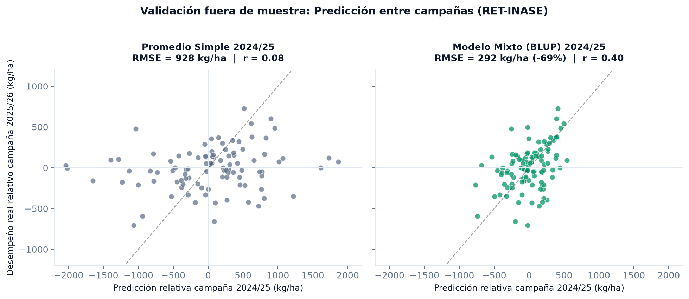

Ordenamiento e integración de bases
Unificamos planillas dispersas, registros históricos y datos de distintos sistemas en estructuras limpias, confiables y listas para analizar.
Diseñamos análisis personalizados para productores, empresas de la agroindustria y compañías AgTech. Convertimos información compleja en respuestas precisas y a la medida de cada operación.
Partimos de la información que tu organización ya registra y aplicamos las herramientas analíticas adecuadas para destrabar valor, optimizar márgenes y reducir incertidumbre.
Unificamos planillas dispersas, registros históricos y datos de distintos sistemas en estructuras limpias, confiables y listas para analizar.
Desarrollamos modelos a medida —desde estadística aplicada hasta machine learning— para explicar resultados, proyectar escenarios y cuantificar riesgos.
Cruzamos registros productivos con mapas, variables climáticas e imágenes para entender cómo influye el territorio en cada resultado.
Traducimos modelos complejos en tableros ejecutivos claros e implementamos flujos con inteligencia artificial para agilizar el análisis continuo.
Nos adaptamos a la escala, los sistemas y las prioridades de tu equipo, ya sea en proyectos puntuales o mediante acompañamiento continuo.
Convertimos el historial de tus campañas, lotes, rodeos y costos en información clara para mejorar la eficiencia física y el margen económico.
Aportamos visibilidad analítica sobre originación, procesos, calidad, logística y desempeño comercial para decidir con mayor previsibilidad.
Sumamos capacidad de ciencia de datos e investigación aplicada para validar tecnologías, calibrar algoritmos y fortalecer tu producto.
Publicamos análisis reproducibles para mostrar nuestro estándar metodológico antes de trabajar juntos.
Modelos Lineales Mixtos (REML / BLUP) aplicados a 14.978 parcelas de la red RET-INASE (2024/25–2025/26). Validación inter-campaña con reducción del 69% en error de predicción y mapas de estabilidad agronómica.
Leer estudio completo
Trabajamos en estrecha colaboración con tu equipo, cuidando la confidencialidad de tu información en cada etapa.
Escuchamos qué decisión necesitás tomar, revisamos qué información tenés hoy y definimos un alcance claro.
Ordenamos, limpiamos e integramos tus fuentes de datos para asegurar que el análisis parta de una base sólida.
Aplicamos los métodos estadísticos o de inteligencia artificial más adecuados para responder tus preguntas con rigor.
Entregamos informes claros, herramientas interactivas y recomendaciones concretas listas para llevar a la práctica.
Escribinos para coordinar una primera conversación breve. Evaluamos juntos tus datos y te proponemos el mejor camino analítico para tu organización.
Hacé clic abajo para despachar la consulta desde tu correo: